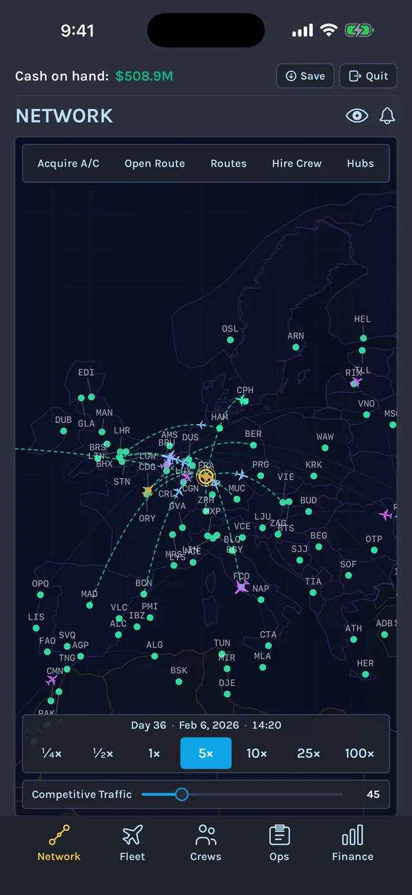
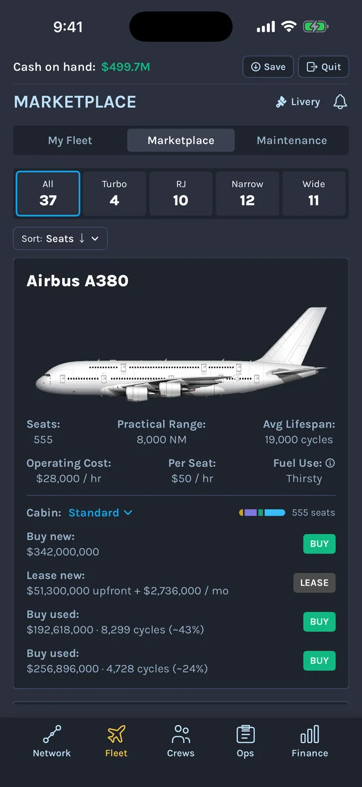
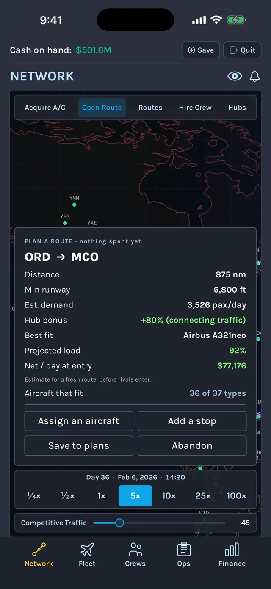
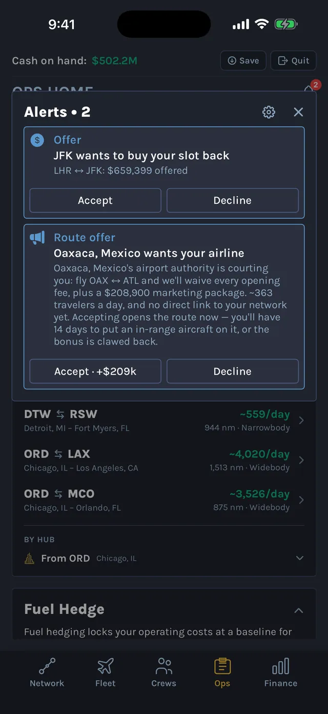
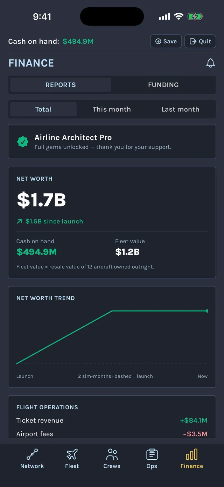
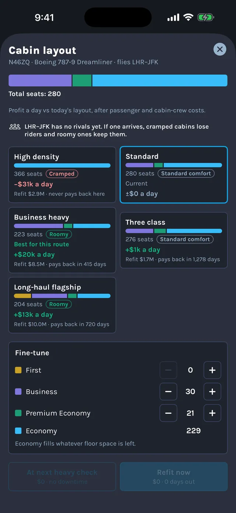
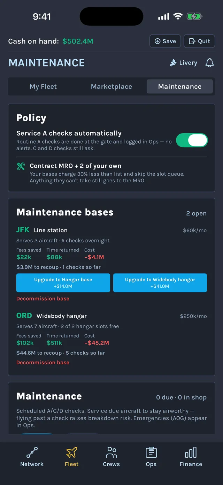
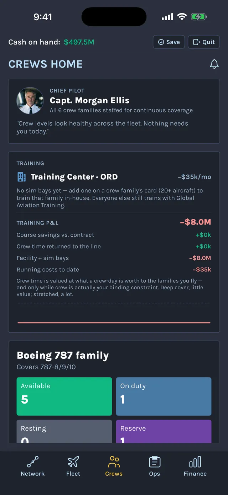
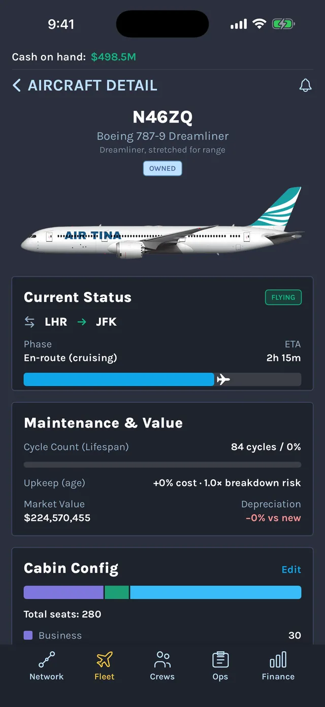
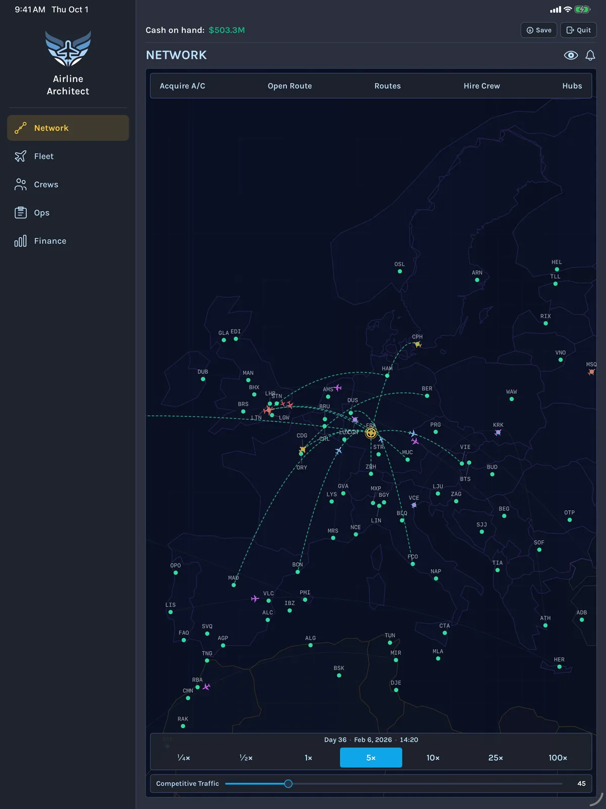

Airline ArchitectThe airline tycoon game for iPhone and iPad
You start with $20 million and an empty hangar. Buy or lease your first jet, open routes across 469 real airports, hire the crews to fly them, and grow a one-plane startup into a global carrier. The simulation never pauses, so every decision happens while the rest of your airline keeps flying.
Airline Architect is a deep airline-management simulation for players who like their tycoon games with real numbers behind them. A genuine passenger-demand model makes route choice the heart of the game: put a widebody on a thin route and it flies half-empty, put a small regional jet on a busy trunk route and you leave money on the table.
Everything you touch is modeled on the real industry: real airports and island airstrips, real aircraft with their real range, seats and operating costs, crews with real duty and rest limits, and scheduled maintenance checks. You make the strategic calls. Your aircraft fly their routes, board passengers and earn revenue on their own.

Route network
Build a route network across 469 real airports
Pick a starting region anywhere in the world and grow city by city. Open routes, chain multi-city rotations, and build hubs that make every connecting route stronger. The map wraps the whole globe, a day/night line sweeps across it, and real airport night curfews close cities to late departures.

Fleet
Choose from 37 real aircraft, turboprops to the A380
Every type flies with its real range, seat count and operating costs: short-field turboprops like the Dash 8 and ATR 42, Embraer and CRJ regional jets, the A320 and 737 families, and long-haul widebodies up to the 787, A350, 747-8 and A380. Buy new, lease, or hunt the used-aircraft market. Every airframe ages, and old metal costs more to keep flying.

Route planning
Research every route with real US airfares
Before you spend a dollar, the route planner shows demand, your hub bonus and the profit a route should earn each day. US routes are priced from the US Department of Transportation's airfare data for 2025 and 2026, about 5,800 airport pairs. A thin route that only one airline flies can pay double the going rate, while a busy coast-to-coast trunk pays less than you'd think.

Live operations
The simulation never pauses
Airport offers, mechanical breakdowns, crew shortages, storms and rival moves arrive as live decisions while every other aircraft keeps flying. Real seasons shape the disruptions: hurricane season, winter storms and the monsoon. Slow time to a quarter speed to think, or run it at 100× and watch the revenue roll in. The game slows itself down when something needs you.

Finance
Grow from startup to public company
Monthly reports show exactly where the money goes. Fund expansion with loans, or take your airline public with a live share price, activist investors and a board that can vote you out. Once you're at the top, scout rival carriers, acquire them, and survive the integration.
Run every part of the operation

Design every cabin
Pick a layout from high density to long-haul flagship, or fine-tune first, business, premium economy and economy seats, and see the profit a day each one earns before you commit.

Plan maintenance checks
Build hangars and line stations, and schedule every A, C and D check. When a heavy check grounds an aircraft, cover its routes with a spare, acquire a replacement, or suspend the route.

Hire and train crews
Crews follow real duty and rest limits, so one crew can't fly forever. Hire pilots, open a training centre, appoint a chief pilot, and keep every aircraft family covered.

Fly your own colors
Design your airline's livery and see it on every aircraft you own, in the fleet and on the map.
A world that feels alive
Hubs and airport clubs
Fortify a city with a hub and an airport club to build loyalty and hold off competitors, with a live payback view that tells you if it's working.
Rival airlines
Rival carriers contest your most profitable routes and fly fleets true to the real world.
Real seasons and weather
Hurricane season, winter storms and the monsoon decide where and when disruption strikes.
Game Center achievements
Milestones from your first route to your first acquisition, tracked in Game Center.
Made for iPhone and iPad
Airline Architect is built natively for iPhone and iPad, with a layout that uses the full width of the big screen. Your airlines sync through iCloud, so you can start a route on your phone and finish the expansion on your iPad.
Saves sync between iPhone and iPad through iCloud
Plays in English and German
Requires iOS or iPadOS 18 or later

What players say
4.2out of 517 ratings on the App Store (US), Oct 2026
Honestly one of the best airline sims I’ve played. So many others are scared to put the maintenance options, or put real setbacks into the aspect. The fact there is no option for pay to play is amazing, earn it. It takes time. I had 3 airlines going before I found the one that worked best.
So much fun, and you are fully in control.
This game is so much fun to play!
I wish there were more airport to choose from within the United States and I wish there was a way to toggle all of the notifications, but besides those two gripes it’s great overall
i love this game! so well made and so interesting getting to own an airline, i’ve learned so much about the industry through this game and feel so educated on such cool details about airlines that i otherwise would have never known. hats off to the amazing inventor of this game! 🙌
I’ve really enjoyed playing this game. It realistically captures what it must be line to build a company from the ground up. Making decisions like choosing my initial routes and appropriate type of plane and seeing how those decisions affected my bottom line was amazing. Experimenting with allowing my airline to grow organically versus taking advantage of loans to grow my airline faster was really cool. There are so many layers to this game. For example , once my airline was established, I could see how much competition I had from other carriers, and choose to do things like establishing a hub, doing an ad campaign, providing loyalty program, etc.
Great game!
Thank you for updating your game consistently. This game is addictive and can occupy hours of play. I appreciate the ability to merge or acquire other airlines. Some suggestions:
• Could we adjust how stops are added on routes so longer paths become possible? For example, HKG to EZE? Even when I tried adding a stop at LAX, the system would not allow the route.
• Could we add a filter in the Route tab to separate routes from different hubs? Or from different airlines after a merger?
• Could we include a filter in Route to sort from oldest to newest?
• Once two airlines merge, could we use separate liveries?
• Could we have the A359-ULR and A35K-ULR?
Thank you and cheers!!
Such a fun game played it for like 2 hours absolutely incredible game, just wish there wasn’t a pay wall as I don’t really have £10 to set aside for a game. But if you have £10 spare definitely play super fun and creative game!
Airline Architect is free to download. The free version lets you build an airline of up to 6 aircraft and 5 routes, enough to establish your first hub and see whether the game is for you. A single one-time purchase unlocks the full game with no limits.
No subscription
No ads
No energy timers or waiting to collect
Airline Architect FAQ
Is Airline Architect free?
Yes. Airline Architect is free to download and play. The free version caps your airline at 6 aircraft and 5 routes, which is enough to build your first hub. A one-time purchase removes the caps for good. There is no subscription and there are no ads.
Is Airline Architect on Android or PC?
Not at the moment. Airline Architect is made for iPhone and iPad and requires iOS or iPadOS 18 or later.
Do I need an internet connection to play?
No. The whole simulation runs on your iPhone or iPad, and there's no account or server. A connection is only used to sync your saves through iCloud, for Game Center, and for the one-time purchase.
How realistic is Airline Architect?
It uses 469 real airports, 37 real aircraft types with their real range, seats and operating costs, real US airfare data for about 5,800 airport pairs, crew duty and rest limits, and scheduled A, C and D maintenance checks. Real airline names appear only as factual reference data, with no affiliation implied.
Can I play the same airline on iPhone and iPad?
Yes. Saved games sync automatically through iCloud. Sign in with the same Apple Account on both devices with iCloud Drive turned on.
Can I pause the game?
There's no pause button, by design: disruptions arrive as decisions while the rest of your airline keeps flying. You control the pace with time speeds from a quarter speed up to 100×, and the game slows itself down when an event needs your attention.
How is it different from other airline tycoon games?
Airline Architect is a single-player simulation first. There are no energy timers, no waiting to collect, and no ads. Demand, fares, crews and maintenance are modeled on the real industry, so the strategy comes from matching the right aircraft to the right market, not from tapping faster.
What languages does it support?
English and German.
Your first route is waiting
Download Airline Architect free on the App Store and build the sky.